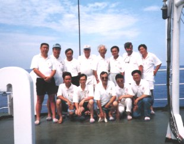
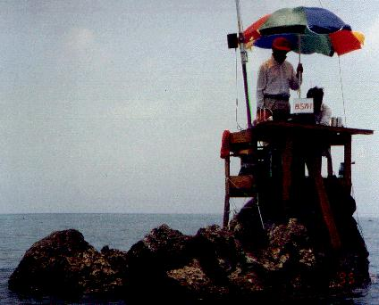
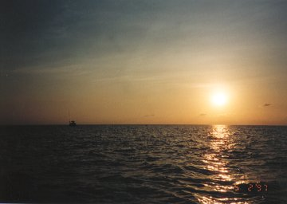

1997 BS7H( Scarborough Reef) DX-Pedition

DXペディションの全記録
BS7H 1997 DXペディションのVideoによる記録
| Index | Document |
|---|---|
 |
1997 BS7H(No.1) 1997 BS7H DX PEDITION (1)＝ 計画発表 ＝ |
 |
1997 BS7H(No.2) 1997 BS7H DX PEDITION (2)＝ 出発まで ＝ |
 |
1997 BS7H(No.3) 1997 BS7H DX PEDITION 運用記録・報告 (1) |
 |
1997 BS7H(No.12) 写真で見るスカボロー・リーフ（SLIDE SHOW） |
 |
1997 BS7H(No.13) スカボロー・リーフ資料（地図） |
【1997 BS7H 運用報告】
| Index | Document |
|---|---|
 |
1997 BS7H(No.4) ペディション参加への誘い |
 |
1997 BS7H(No.5) 準備から広州出発前夜まで |
 |
1997 BS7H(No.6) 広州出発からスカボロー・リーフ到着まで |
 |
1997 BS7H(No.7) 設営の準備 |
 |
1997 BS7H(No.8) 運用開始 |
 |
1997 BS7H(No.9) 運用結果 |
 |
1997 BS7H(No.10) フイリピン海軍との遭遇 |
 |
1997 BS7H(No.11) 運用を終了して |